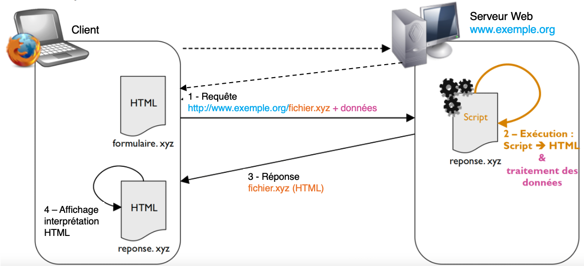
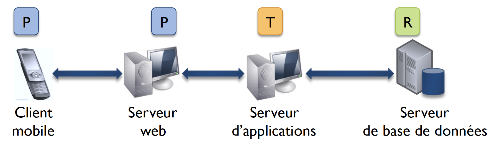

3A cursus ingénieurs - Mention Architectures des Systèmes Informatiques
CentraleSupelec - Université Paris-Saclay - 2023/2024
CentraleSupelec - Université Paris-Saclay - 2023/2024

Principes des sites web
- Pages HTML statiques
- Obtention via le protocole HTTP (requête/réponse)
HTML
HTML = EXtensible HyperText Markup Language
- Un langage à base de balises
- $\approx$ XML avec une grammaire
<html xmlns="http://www.w3.org/1999/xhtml">
<head>
Le titre de la fenetre
</head>
<body>
Voici ma premiere page
</body>
</html>
Structuration de texte
...
<body>
Gros titre
Voici mon paragraphe
Section
Sous-section

Un nouveau paragraphe avec un
lien hypertexte
.
</body>
...
CSS - personnalisation de l'apparence
-
Attribut de définition de style
Gros titre
-
Surcharge de style par défaut
Section
h2 { text-decoration: underline; } -
Identifiant
#ampoule { border: 3px dashed blue; } -
Classe de style
Voici mon paragraphe
.myp { font-style: italic; }
Principe des applications web
Génération dynamique du contenu HTML à partir
d’un langage de programmation.
Formulaires
Structure des formulaires
...
<body>
<h1>Un formulaire</h1>
<form action="reponse.xyz" method="POST">
<label for="prenom">Prénom :</label>
<input type="text" id="prenom" name="prenom"/>
<button type="submit" value="S'inscrire !"/>
</form>
</body>
...
Java : langage et plate-forme
Java Platform Standard Edition (Java SE) =
JVM (machine virtuelle) + APIs (bibliothèques) +
Java
Exemple
Composants
- Composant = unité logique de traitement
- Objectif : modularité et réutilisation
- Propriétés :
- Identification : nom unique, référencé dans un annuaire
- Indépendance : utilisable tout seul
- Réutilisation : utilisable dans différents contextes
- Intégration : combinable avec d’autres composants
- Technologies d’implémentation multiples
- Déploiement sur serveur
Composants et architectures N-tiers
Composants Java : JavaBeans
- Composant implémenté par une classe Java
- $\approx$ Classe Java mais conventions à respecter
- Sérialisation
- Constructeur par défaut
- Propriétés privées avec accesseurs (encapsulation et introspection)
public <type> get<Propertyname>()public void set<Propertyname>(parameter)
-
Méthodes d'interception d'événements
- Utilisation d'écouteurs et génération d'événements
- Ex:
implements PropertyChangeListener
Exemple de JavaBeans
Java/Jakarta Enterprise Edition

- Un ensemble de spécifications
- Proposées par la société Sun, puis Eclipse Foundation depuis 2017.
- Dédiées au développement et au déploiement
d’applications n-tiers à base de composants centrées sur le serveur
- applications d'entreprise
- Basées sur Java SE avec
- les spécifications du Serveur d’Applications
- des bibliothèques pour le développement d'applications d’entreprises (API)
-
Une implémentation de référence
- le Serveur d’Applications GlassFish version 7.0.13 (certifiée Jakarta EE 10)
- développé par Eclipse Foundation (Février 2024)
Ce que définit Jakarta EE
-
Des composants pour embarquer le code
des éléments d’une application
- composants web
- composant métiers
-
Des conteneurs pour héberger les composants
d’une application
- conteneur web
- conteneur métier
-
Des services support pour les aspects transverses
- Sécurité, transactions ...
- Des infrastructures de communication
Le serveur d'application Jakarta EE

Jakarta EE Web Profile
-
Sous-ensemble de spécifications séparé dédié
au développement web -
Inclut
- composants web
- composants métier légers
- API communes
- N’utilise que le conteneur Web
Jakarta EE Web Profile
Architectures Jakarta EE type

Partie web de Jakarta EE

Servlets
- Servlet = composant Java,
accessible à une URL donnée, destiné à :
- Récupérer les requêtes HTTP de l’utilisateur
- Invoquer les traitements applicatifs Java correspondants
- Construire la page HTML de réponse pour l’utilisateur
Exemple de Servlets
@WebServlet(name="PremiereServlet", urlPatterns={"/premiereServlet"})
public class PremiereServlet extends HttpServlet {
public void doGet(HttpServletRequest requete,
HttpServletResponse reponse) throws IOException, ServletException {
reponse.setContentType("text/html");
PrintWriter pw = reponse.getWriter();
try {
pw.print("<html>");
pw.print("<head>");
pw.print("<title>Ma premiere servlet</title>");
pw.print("</head>");
pw.print("<body>");
pw.print("<h1>Ca marche !</h1>");
pw.print("</body>");
pw.print("</html>");
} finally {
out.close();
}
}
}
Exemple de Servlets
Problèmes
maintenance, évolution… !
maintenance, évolution… !
Patron Modèle-Vue-Contrôleur (MVC)
- Principe = séparation des responsabilités
- Vue : gère les sorties = visualisation (interface utilisateur)
- Contrôleur : gère les entrées
- Traitement des actions de l’utilisateur et choix des vues
- Gestion des modifications du modèle
- Modèle : gère la logique et les données
Java Server Faces (JSF)
- Framework de composants web basé sur MVC amélioré :
- modèle = logique + données
Ce que JSF définit
- Contrôleur unique = FacesServlet
- Gère les événements et les interactions avec le client
- Modèle =
- Logique = Managed Beans ou "backing beans"
- Données = JavaBeans, Enterprise JavaBeans…
- Vue = page JSF = arbre de composants
- Composants prédéfinis avec un rendu HTML
- Modèles de navigation
- Statique : liens hypertextes entre vues
- Dynamique : règles de navigation s’appuyant sur un bean
- Outils : convertisseur et validateurs
Principe de JSF
Composants JSF
- Une classe : gère les événements utilisateur
UISelectOne choiceMenu; - Un tag : permet de l’inclure dans une vue JSF
<h:selectOneMenu id="choice" value="..."> <f:selectItems value="..." /> </h:selectOneMenu> - Un rendu : génère la partie graphique de l’interface utilisateur
(HTML par défaut)<select id="j_idt7:choice" name="j_idt7:choice" size="1"> <option value="1" selected="selected">item 1</option> <option value="2">item 2</option> </select>
Composants JSF
Bibliothèques de composants prédéfinis et composablesManaged Beans (backing beans)
- Composant géré par le contrôleur JSF
- $\approx$ JavaBean mais avec annotations
- Gestion par le conteneur (création, cycle de vie…)
- Services basiques
- Identification unique, utilisation dans les composants JSF
- Expression Language (EL)
- Gestion du scope (durée de conservation de l'état)
- Gestion du cycle de vie via des callbacks
- Injection
- Conversion/validation des données
- Identification unique, utilisation dans les composants JSF
Managed Beans (backing beans)
import jakarta.enterprise.context.SessionScoped;
import jakarta.inject.Named;
import jakarta.annotation.PostConstruct;
@SessionScoped
@Named
public class MyManagedBean implements Serializable {
private String name;
public MyManagedBean (){...}
@PostConstruct
public void mySetup () {
this.name = "Duke";
}
public String getName(){return name;}
public void setName(String n){this.name = n;}
public String sayHello() {
return "Hello, I'm " + this.name;
}
}
Managed Beans et Composants JSF
<f:view>
<h:form>
<h1>Creation d'un compte</h1>
<p>Nom :</p>
<h:inputText
value="#{personBean.name}"
required="true"/>
</h:inputText>
<p>Prenom :</p>
<h:inputText
value="#{personBean.fName}">
<f:validateLength maximum="50"/>
</h:inputText>
<h:commandButton value="Valider"
action="#{personBean.createAccount()}"/>
</h:form>
</f:view>
@SessionScoped
@Named
public class PersonBean implements Serializable{
private String name;
private String fName;
public CatalogBean(){
...
}
...
public String createAccount(){
...
return "createAccountSuccess";
}
}
JSF et navigation web
- A l'aide de règles de navigation décrites dans
faces-config.xml,
on déterminer, en fonction de la page courante, la page cible. - Outcome =
- Chaine de caractère représentant le résultat d'un traitement
(Ex : fail, pass, success, case5, caseTruc…) - Peut conditionner l'activation d'une règle de navigation
- Chaine de caractère représentant le résultat d'un traitement
/index.jsp
HelloWorld
/hello-world.jsp
Types de navigation
- Navigation statique = navigation par identifiant de vue/outcome
- Navigation dynamique =
- méthode d'un backing bean rendant plusieurs outcomes possibles
- règles de navigation différentes suivant les outcomes
Exemple de Navigation statique
/index.jsp
outcom1
/action1.jsp
outcom2
/action2.jsp
<h:commandLink action="outcom1" value="Exemple Outcom 1"/>
<h:commandLink action="outcom2" value="Exemple Outcom 2"/>
Exemple de Navigation dynamique
/index.jsp
outcom1
/action1.jsp
outcom2
/action2.jsp
public class MyBean implements Serializable {
...
public String allerEtapeSuivante(){
...
if(...) return "outcom1";
else return "outcom2";
}
}
Exemple de Navigation dynamique
/index.jsp
outcom1
/action1.jsp
outcom2
/action2.jsp
<h:commandLink action="#{myBean.allerEtapeSuivante()}" value="étape suivante" />
Sessions et composants web
- Session web = maintient d'un état conversationnel
avec un client
à travers plusieurs couples requête/réponse- permet de stocker des informations alors que l’utilisateur change plusieurs fois de pages web
- Session JSF = Session web
- Mettre des données en sessions avec un ManagedBean
@SessionScoped @Named public class PersonBean implements Serializable {...}
Partie persistance de Jakarta EE
Bases de données
- Ensemble de tables
- Table = colonnes $\times$ lignes
- Colonnes = propriétés
- Ligne = ensemble de valeurs
pour les différentes propriété
- Clé primaire = identifiant unique d’une ligne
- Table = colonnes $\times$ lignes
- Stockage persistant sur un serveur
- Gestion par un SGBD (Système de Gestion de Base de Données)
Persistance en base de données
- Besoin = Create + Read + Update + Delete (CRUD)
- Problème = mapping relationnel/objet des données
Java Persistence API (JPA)
- JPA = spécification d’un mapping relationnel/objet
(Object Relational Mapping – ORM)- Composant pour accéder à la base de données = EntityManager
- prédéfini (pas besoin de l’écrire)
- générique
- Composants pour stocker les données = EJB Entity
- Langage de requêtes = Java Persistence Query Language (JPQL)
- Composant pour accéder à la base de données = EntityManager
- Plusieurs implémentations
- EclipseLink (Oracle TopLink)
- JBoss Hibernate...
- S'appuie sur un connecteur de base de données
Ex : JDBC
Principe de JPA
EJB Entity
- Composant persistant partagé par plusieurs clients
- Représente des données métiers stockées dans une base de données
- une classe correspond à une table
- les attributs définis dans la classe correspondent aux colonnes de la table
- une instance de la classe (= un objet) représente une ligne de la table
- Possède une identité explicite (clé primaire)
- Représente des données métiers stockées dans une base de données
- EJB Entity $\approx$ JavaBean mais ...
- avec des annotations qui définissent le mapping relationnel/objet
- gestion par le conteneur (création, cycle de vie...)
Exemple
@Entity
@Table(name = "person")
public class Personne implements Serializable {
@Id
@GeneratedValue(strategy = GenerationType.SEQUENCE)
@Column(name = "id")
private int id;
@Basic(optional = false)
@Column(name = "name")
private String nom;
public Personne() { super(); }
public int getId() { return this.id; }
public void setId(int id) { this.id = id; }
public String getNom() { return this.nom; }
public void setNom(String nom) { this.nom = nom; }
...
}